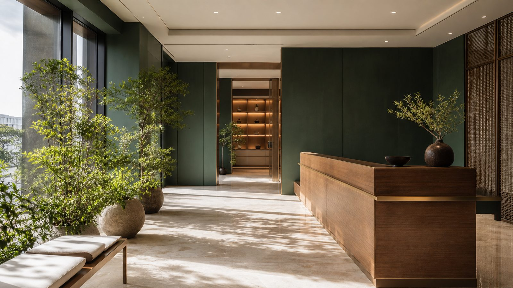
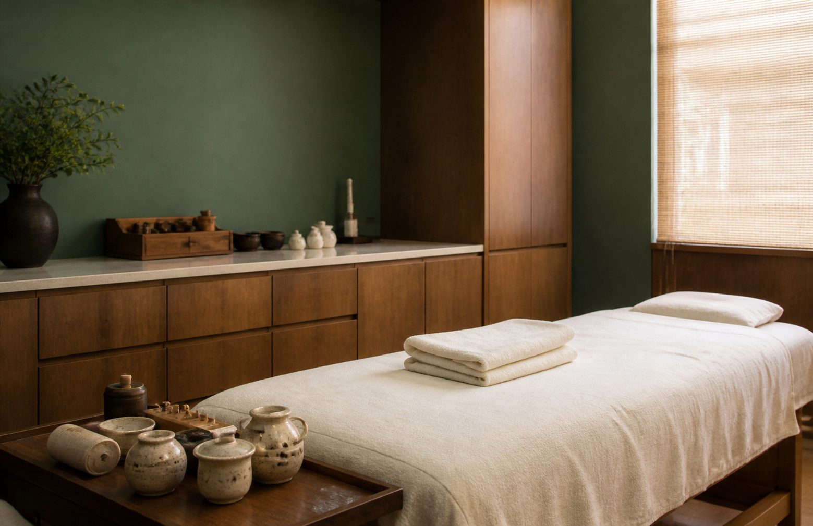

초진은 진찰표를 함께 씁니다
수면·식사·통증 부위·자세를 한 장에 정리하고, 첫날 치료 계획과 예상 횟수를 표로 드립니다.
진찰 + 상담50분

Danahan Korean Medicine · Since 2004
증상 하나를 급히 누르기보다, 잠과 소화와 통증이 얽힌 방식을 먼저 봅니다. 초진 50분 동안 듣고, 만지고, 기록한 뒤 — 지금 가장 필요한 치료부터 시작합니다.
수면·식사·통증 부위·자세를 한 장에 정리하고, 첫날 치료 계획과 예상 횟수를 표로 드립니다.
평일 09:00–19:00, 토요일 13:00까지. 온라인 예약 후 문자로 확정 안내를 드립니다.
표시된 수치는 샘플 페이지용 예시 데이터입니다. 실제 한의원 실적과는 관계가 없습니다.
같은 통증이라도 잠이 부족한 사람과 소화가 약한 사람의 처방은 달라야 합니다. 단아한 한의원은 세 가지 원칙으로 진료의 순서를 지킵니다.
모든 치료는 진찰 결과와
환자분의 생활 조건을 함께 놓고 정합니다.
맥과 혀, 복부와 자세를 확인하고 수면·식사·업무 자세까지 기록합니다. 진찰 없이 처방부터 정하지 않습니다.
초진 진찰 50분경추·골반·족부의 정렬과 가동 범위를 직접 확인합니다. 영상 검사가 필요하면 협진 가능한 곳으로 안내합니다.
촉진 · 가동범위 검사치료 계획, 예상 횟수, 비용을 첫날 표로 정리해 드립니다. 중간에 계획이 바뀌면 이유부터 말씀드립니다.
치료 계획표 제공통증과 체형, 다이어트와 보약, 피부와 안면은 따로 떨어진 문제가 아닙니다. 같은 진찰표 위에서 우선순위를 정해 치료 순서를 설계합니다.

CLINIC 01목·어깨, 허리, 무릎의 통증을 침·약침·추나로 다루고, 다시 아파지지 않도록 자세와 습관까지 함께 봅니다.
체질 진단을 먼저 하고, 식습관과 수면 패턴에 맞춘 한약을 처방합니다. 무리한 감량보다 유지되는 변화를 봅니다.
 CLINIC 03
CLINIC 03
안면마비 후유 증상과 건조·가려움 같은 피부 불편을 한방 침과 외용 처방으로 관리합니다.
 6층 대기실 · 예약제 운영으로 평균 대기 5분 이내
6층 대기실 · 예약제 운영으로 평균 대기 5분 이내
진료는 예약제로 운영합니다. 한 분의 진찰이 끝난 뒤 다음 분을 모시기 때문에, 대기실에서 흘려보내는 시간이 거의 없습니다.
어깨가 아파서 갔는데 원장님이 허리부터 보더라고요. 처음엔 의아했는데, 자세를 같이 고치고 나니 어깨 통증도 같이 줄었습니다. 6주 동안 매번 무엇을 하는지 설명해 주셔서 안심이 됐어요.
다이어트 한약은 부담스러워서 미뤘는데, 체질 검사부터 하고 식사 기록을 같이 보면서 처방을 바꿔 주셨어요. 12주에 8kg 정도 줄었고 지금도 유지하고 있습니다. 무리하게 굶지 않아서 좋았습니다.
후기는 환자분 동의를 받아 각색한 예시입니다. 치료 효과와 기간은 개인에 따라 다릅니다.
초진 50분 상담 · 진찰 후 치료 계획과 예상 횟수를 표로 정리해 드립니다.